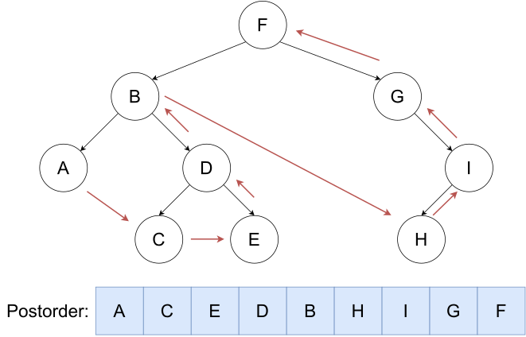

Code Practice
一、STL
1、vector
Tip
顺序容器，任意类型动态数组
#include<bits/stdc++.h>
using namespace std;
int main() {
int n;
cin>>n;
vector<int> v(n);
for(int i=0;i<n;i++) {
cin>>v[i];
}
for(int i=0;i<n;i++) {
cout<<v[i]+1<<" ";
}
}
e.g.1# 【深基15.例2】寄包柜
题目描述
超市里有 \(n(1\le n\le10^5)\) 个寄包柜。每个寄包柜格子数量不一，第 \(i\) 个寄包柜有 \(a_i(1\le a_i\le10^5)\) 个格子，不过我们并不知道各个 \(a_i\) 的值。对于每个寄包柜，格子编号从 1 开始，一直到 \(a_i\)。现在有 \(q(1 \le q\le10^5)\) 次操作：
1 i j k：在第 \(i\) 个柜子的第 \(j\) 个格子存入物品 \(k(0\le k\le 10^9)\)。当 \(k=0\) 时说明清空该格子。2 i j：查询第 \(i\) 个柜子的第 \(j\) 个格子中的物品是什么，保证查询的柜子有存过东西。
已知超市里共计不会超过 \(10^7\) 个寄包格子，\(a_i\) 是确定然而未知的，但是保证一定不小于该柜子存物品请求的格子编号的最大值。当然也有可能某些寄包柜中一个格子都没有。
输入格式
第一行 2 个整数 \(n\) 和 \(q\)，寄包柜个数和询问次数。
接下来 \(q\) 个行，每行有若干个整数，表示一次操作。
输出格式
对于查询操作时，输出答案，以换行隔开。
样例 #1
样例输入 #1
样例输出 #1
提示
\(\text{upd 2022.7.26}\)：新增加一组 Hack 数据。
#include<bits/stdc++.h>
using namespace std;
int main() {
int n, q;
cin >> n >> q;
vector<vector<int> > A(n + 1);
for (int i = 1; i <= q; i++) {
int op;
cin >> op;
if (op == 1) {
int I, j, k;
cin >> I >> j >> k;
if (A[I].size() < j + 1) {//in case there is no 'j'
A[I].resize(j + 1);//resize the 'j'
}
A[I][j] = k;
}
if (op == 2) {
int I, j;
cin >> I >> j;
cout << A[I][j] << endl;
}
}
}
2、 队列
e.g.2# 约瑟夫问题
题目描述
\(n\) 个人围成一圈，从第一个人开始报数,数到 \(m\) 的人出列，再由下一个人重新从 \(1\) 开始报数，数到 \(m\) 的人再出圈，依次类推，直到所有的人都出圈，请输出依次出圈人的编号。
输入格式
输入两个整数 \(n,m\)。
输出格式
输出一行 \(n\) 个整数，按顺序输出每个出圈人的编号。
样例 #1
样例输入 #1
样例输出 #1
提示
\(1 \le m, n \le 100\)
#include<bits/stdc++.h>
using namespace std;
int main() {
int n, m; // n是人数，m是报数到几出列
cin >> n >> m;
queue<int> q; // 创建队列模拟圆圈中的人
for (int i = 1; i <= n; i++) { // 将1到n的数字放入队列
q.push(i); // 数字代表每个人的编号
}
for (int i = 1; i <= n; i++) { // 一共要出列n个人
for (int j = 1; j < m; j++) { // 每次报数到m-1
int f = q.front(); // 取出队首的人
q.pop(); // 移除队首
q.push(f); // 将这个人放到队尾(因为没报到m，不用出列)
}
cout << q.front() << ' '; // 输出报数为m的人(即出列的人)
q.pop(); // 移除这个人(出列)
}
}
#include <iostream>
using namespace std;
int josephus(int n, int k) {
if (n == 1) return 0;
return (josephus(n - 1, k) + k) % n;
}
int main() {
int n, k;
cin >> n >> k;
int result = josephus(n, k);
cout << result + 1 << ' '; // 输出结果加1，因为题目中的位置是从1开始的
return 0;
}
e.g.3[NOIP2010 提高组] 机器翻译
题目背景
NOIP2010 提高组 T1
题目描述
小晨的电脑上安装了一个机器翻译软件，他经常用这个软件来翻译英语文章。
这个翻译软件的原理很简单，它只是从头到尾，依次将每个英文单词用对应的中文含义来替换。对于每个英文单词，软件会先在内存中查找这个单词的中文含义，如果内存中有，软件就会用它进行翻译；如果内存中没有，软件就会在外存中的词典内查找，查出单词的中文含义然后翻译，并将这个单词和译义放入内存，以备后续的查找和翻译。
假设内存中有 \(M\) 个单元，每单元能存放一个单词和译义。每当软件将一个新单词存入内存前，如果当前内存中已存入的单词数不超过 \(M-1\)，软件会将新单词存入一个未使用的内存单元；若内存中已存入 \(M\) 个单词，软件会清空最早进入内存的那个单词，腾出单元来，存放新单词。
假设一篇英语文章的长度为 \(N\) 个单词。给定这篇待译文章，翻译软件需要去外存查找多少次词典？假设在翻译开始前，内存中没有任何单词。
输入格式
共 \(2\) 行。每行中两个数之间用一个空格隔开。
第一行为两个正整数 \(M,N\)，代表内存容量和文章的长度。
第二行为 \(N\) 个非负整数，按照文章的顺序，每个数（大小不超过 \(1000\)）代表一个英文单词。文章中两个单词是同一个单词，当且仅当它们对应的非负整数相同。
输出格式
一个整数，为软件需要查词典的次数。
样例 #1
样例输入 #1
样例输出 #1
提示
样例解释
整个查字典过程如下：每行表示一个单词的翻译，冒号前为本次翻译后的内存状况：
1：查找单词 1 并调入内存。1 2：查找单词 2 并调入内存。1 2：在内存中找到单词 1。1 2 5：查找单词 5 并调入内存。2 5 4：查找单词 4 并调入内存替代单词 1。2 5 4：在内存中找到单词 4。5 4 1：查找单词 1 并调入内存替代单词 2。
共计查了 \(5\) 次词典。
数据范围
- 对于 \(10\%\) 的数据有 \(M=1\)，\(N \leq 5\)；
- 对于 \(100\%\) 的数据有 \(1 \leq M \leq 100\)，\(1 \leq N \leq 1000\)。
#include<bits/stdc++.h>
using namespace std;
int main() {
int M, N;
cin >> M >> N;
int count = 0;
queue<int> Q; // 创建队列Q
set<int> seen; // 创建集合seen，用于快速判断某个数是否在缓存中
for (int i = 0; i < N; i++) {
if (seen.find(i) == seen.end()) { // 如果数字i不在seen集合中
// seen.find()返回迭代器，如果找不到返回seen.end()
Q.push(i); // 将i加入队列
seen.insert(i); // 将i加入seen集合
count++; // 缓存未命中次数加1
}
if (Q.size() > M) { // 如果队列大小超过了限制M
int removed = Q.front(); // 获取队列最前面的元素
Q.pop(); // 从队列中移除这个元素
seen.erase(removed); // 从seen集合中也移除这个元素
}
}
cout << count;
return 0;
}
| queue |
创建 |
|---|---|
| push | 队尾插入 |
| pop | 队首弹出 |
| size() | 返回元素个数 |
| front() | 队首元素 |
| back() | 队尾元素 |
3、Stack 栈
e.g.4括号序列
题目描述
定义如下规则：
- 空串是「平衡括号序列」
- 若字符串 \(S\) 是「平衡括号序列」，那么 \(\texttt{[}S\texttt]\) 和 \(\texttt{(}S\texttt)\) 也都是「平衡括号序列」
- 若字符串 \(A\) 和 \(B\) 都是「平衡括号序列」，那么 \(AB\)（两字符串拼接起来）也是「平衡括号序列」。
例如，下面的字符串都是平衡括号序列：
()，[]，(())，([])，()[]，()[()]
而以下几个则不是：
(，[，]，)(，())，([()
现在，给定一个仅由 (，)，[，]构成的字符串 \(s\)，请你按照如下的方式给字符串中每个字符配对：
1. 从左到右扫描整个字符串。
2. 对于当前的字符，如果它是一个右括号，考察它与它左侧离它最近的未匹配的的左括号。如果该括号与之对应（即小括号匹配小括号，中括号匹配中括号），则将二者配对。如果左侧未匹配的左括号不存在或与之不对应，则其配对失败。
配对结束后，对于 \(s\) 中全部未配对的括号，请你在其旁边添加一个字符，使得该括号和新加的括号匹配。
输入格式
输入只有一行一个字符串，表示 \(s\)。
输出格式
输出一行一个字符串表示你的答案。
样例 #1
样例输入 #1
样例输出 #1
样例 #2
样例输入 #2
样例输出 #2
提示
数据规模与约定
对于全部的测试点，保证 \(s\) 的长度不超过 \(100\)，且只含 (，)，[，] 四种字符。
#include <bits/stdc++.h>
using namespace std;
int main() {
string input;
stack<int> st; // Stack will store indices instead of characters
vector<bool> matched; // Track which positions are properly matched
string answer;
cin >> input;
// Initialize matched vector with same size as input
matched.resize(input.length(), false);
// First pass: Find all matching pairs
for (int i = 0; i < input.length(); ++i) {
if (input[i] == '(' || input[i] == '[') {
st.push(i); // Push index onto stack
}
else if (input[i] == ')' || input[i] == ']') {
if (!st.empty()) {
char opening = input[st.top()];
// Check if brackets match
if ((input[i] == ')' && opening == '(') ||
(input[i] == ']' && opening == '[')) {
// Mark both positions as matched
matched[i] = true;
matched[st.top()] = true;
st.pop();
}
}
}
}
// Second pass: Build answer string
for (int i = 0; i < input.length(); ++i) {
if (!matched[i]) {
// Replace unmatched brackets with their complete pairs
if (input[i] == '(' || input[i] == ')') {
answer += "()";
} else {
answer += "[]";
}
} else {
// Keep matched brackets as they are
answer += input[i];
}
}
cout << answer << endl;
return 0;
}
4、杂题（字典序）
e.g.5#String Minimization
题目描述
你有四个长 \(n\) 的字符串 \(a,b,c,d\)。你可以执行任意多次如下操作：
- 选择一个 \(i\)，交换 \(a_i,c_i\)，然后交换 \(b_i,d_i\)。
求在 \(a\) 的字典序尽量小的前提下，\(b\) 字典序最小是什么。
如果你不知道什么是字典序，看这里：
对于两个字符串 \(p,q\)，称 \(p\) 的字典序小于 \(q\)（记为 \(p<q\)），当且仅当存在自然数 \(k\) 使 \(p,q\) 的前 \(k\) 个字符相同且 \(p_{k+1}\) 的 ASCII 码小于 \(q_{k+1}\) 的 ASCII 码。
例如： - \(\texttt{abc}<\texttt{baa}\)（当 \(k=0\)） - \(\texttt{bae}<\texttt{bbb}\)（当 \(k=1\)）
输入格式
输入的第一行有一个正整数 \(n\)，表示字符串 \(a,b,c,d\) 长度。
之后四行，每行一个字符串，分别表示 \(a,b,c,d\)。
输出格式
输出一行一个字符串，表示题目要求的字符串 \(b\)。
样例 #1
样例输入 #1
样例输出 #1
提示
【样例解释】
选择 \(i\) 为 \(1,3,4\) 可以让 \(a\) 取到最小的字典序 \(\texttt{weablake}\)，此时字符串 \(b\) 也得到满足题意最小的字典序 \(\texttt{auazyqaq}\)。
事实上如果 \(i=1\) 时不操作 \(a\) 的字典序也是最小的，但是此时字符串 \(b\) 就是 \(\texttt{yuazyqaq}\)，不够小。
【数据范围】
本题共 \(10\) 个测试点，每个测试点 \(10\) 分。
| 测试点编号 | \(n\le\) | 特殊性质 |
|---|---|---|
| \(1\sim 2\) | \(15\) | |
| \(3\) | \(10^5\) | \(a_i>c_i\) |
| \(4\sim 5\) | \(10^5\) | \(a_i\ne c_i\) |
| \(6\sim 7\) | \(10^5\) | \(b_i\ge d_i\) |
| \(8\sim 10\) | \(10^5\) |
对于全体数据，保证 \(1\le n\le 10^5\)，字符串所有字符都是小写字母。
#include<bits/stdc++.h>
using namespace std;
int main() {
int len;
cin >> len;
string a, b, c, d;
cin >> a >> b >> c >> d;
for(int i = 0; i < len; i++) {
// 如果交换后能让a或b变得更小，就进行交换
if(min(a[i], c[i]) != a[i] ||
(a[i] == c[i] && min(b[i], d[i]) != b[i])) {
swap(a[i], c[i]);
swap(b[i], d[i]);
}
}
cout << b << endl;
return 0;
}
/*
此题中，比较整体字典序：每位比较即可
min(a[i], c[i]) != a[i]：检查是否可以让a变得更小
(a[i] == c[i] && min(b[i], d[i]) != b[i])：当a不能再变小时，检查是否可以让b变得更小
*/
二、二叉树
1、分类
（1）满二叉树
每一层节点都是满的
（2）完全二叉树

最后一层有缺失
（3）退化二叉树
每一个节点只有一个子节点
（4）完美二叉树
所有叶结点的深度均相同，且所有非叶节点的子节点数量均为 2 的二叉树称为完美二叉树。

2、静态写法
3、三种遍历方式
- 先（根）序遍历
- 先根节点，再左子树，再右子树

- 中（根）序遍历
- 先左子树，再根节点，再右子树

- 后（根）序遍历
- 先左子树，再右子树，再根节点
- 
e.g.6二叉树的遍历
题目描述
有一个 \(n(n \le 10^6)\) 个结点的二叉树。给出每个结点的两个子结点编号（均不超过 \(n\)），建立一棵二叉树（根节点的编号为 \(1\)），如果是叶子结点，则输入 0 0。
建好树这棵二叉树之后，依次求出它的前序、中序、后序列遍历。
输入格式
第一行一个整数 \(n\)，表示结点数。
之后 \(n\) 行，第 \(i\) 行两个整数 \(l\)、\(r\)，分别表示结点 \(i\) 的左右子结点编号。若 \(l=0\) 则表示无左子结点，\(r=0\) 同理。
输出格式
输出三行，每行 \(n\) 个数字，用空格隔开。
第一行是这个二叉树的前序遍历。
第二行是这个二叉树的中序遍历。
第三行是这个二叉树的后序遍历。
样例 #1
样例输入 #1
样例输出 #1
#include <bits/stdc++.h>
using namespace std;
const int N = 1e5 + 10;
struct tree {
int value;//节点值
int left, right;//左子树和右子树
} tr[N];
void Preorder(int u) {
if (u == 0)
return;//如果节点为空，则返回
cout << u << " ";//输出节点值
Preorder(tr[u].left);//递归遍历左子树
Preorder(tr[u].right);//递归遍历右子树
}
void Inorder(int u) {
if (u == 0)
return;
Inorder(tr[u].left);
cout << u << " ";
Inorder(tr[u].right);
}
void Postorder(int u) {
if (u == 0)
return;
Postorder(tr[u].left);
Postorder(tr[u].right);
cout << u << " ";
}
int main() {
int n;
cin>>n;
for (int i = 1; i <= n; i++) {//注意因为树的最小值从1开始，i也需要从1->n
int a, b;
cin >> a >> b;//输入左子树和右子树
tr[i].value = i;//节点值
tr[i].left = a;//左子树
tr[i].right = b;//右子树
}
Preorder(1);//先序遍历
cout<<endl;
Inorder(1);//中序遍历
cout<<endl;
Postorder(1);//后序遍历
cout<<endl;
}
e.g.7[NOIP2004 普及组] FBI 树
题目描述
我们可以把由 0 和 1 组成的字符串分为三类：全 0 串称为 B 串，全 1 串称为 I 串，既含 0 又含 1 的串则称为 F 串。
FBI 树是一种二叉树，它的结点类型也包括 F 结点，B 结点和 I 结点三种。由一个长度为 \(2^N\) 的 01 串 \(S\) 可以构造出一棵 FBI 树 \(T\)，递归的构造方法如下：
- \(T\) 的根结点为 \(R\)，其类型与串 \(S\) 的类型相同；
- 若串 \(S\) 的长度大于 \(1\)，将串 \(S\) 从中间分开，分为等长的左右子串 \(S_1\) 和 \(S_2\)；由左子串 \(S_1\) 构造 \(R\) 的左子树 \(T_1\)，由右子串 \(S_2\) 构造 \(R\) 的右子树 \(T_2\)。
现在给定一个长度为 \(2^N\) 的 01 串，请用上述构造方法构造出一棵 FBI 树，并输出它的后序遍历序列。
输入格式
第一行是一个整数 \(N(0 \le N \le 10)\)，
第二行是一个长度为 \(2^N\) 的 01 串。
输出格式
一个字符串，即 FBI 树的后序遍历序列。
样例 #1
样例输入 #1
样例输出 #1
提示
对于 \(40\%\) 的数据，\(N \le 2\)；
对于全部的数据，\(N \le 10\)。
noip2004普及组第3题
#include <bits/stdc++.h>
using namespace std;
const int N = 1e4 + 10;
int n;
string s;
int Ls(int p) { return 2 * p; } // 左儿子
int Rs(int p) { return 2 * p + 1; } // 右儿子
struct tree {
char ch;
int l, r;
} tr[N];
void build(int p, int l, int r) {
// 终止条件
if (l == r) {
if (s[l - 1] == '0') {
tr[p].ch = 'B';
} else {
tr[p].ch = 'I';
}
return;
}
int mid = (l + r) / 2; // 切割字符串
// 左右字符串
tr[p].l = Ls(p);
tr[p].r = Rs(p);
// 递归
build(Ls(p), l, mid);
build(Rs(p), mid + 1, r);
if (tr[Ls(p)].ch == 'B' && tr[Rs(p)].ch == 'B') {
tr[p].ch = 'B';
} else if (tr[Ls(p)].ch == 'I' && tr[Rs(p)].ch == 'I') {
tr[p].ch = 'I';
} else {
tr[p].ch = 'F';
}
}
// 后序遍历
void post(int p) {
if(p==0) return;
if (tr[p].l)
post(tr[p].l);
if (tr[p].r)
post(tr[p].r);
cout << tr[p].ch;
}
int main() {
cin >> n >> s;
int len = pow(2, n);
build(1, 1, len);
post(1);
cout << endl;
}
三、DFS
e.g.8[NOIP1998 普及组] 幂次方
题目描述
任何一个正整数都可以用 \(2\) 的幂次方表示。例如 $137=27+23+2^0 $。
同时约定次方用括号来表示，即 \(a^b\) 可表示为 \(a(b)\)。
由此可知，\(137\) 可表示为 \(2(7)+2(3)+2(0)\)
进一步：
\(7= 2^2+2+2^0\) ( \(2^1\) 用 \(2\) 表示)，并且 \(3=2+2^0\)。
所以最后 \(137\) 可表示为 \(2(2(2)+2+2(0))+2(2+2(0))+2(0)\)。
又如 \(1315=2^{10} +2^8 +2^5 +2+1\)
所以 \(1315\) 最后可表示为 \(2(2(2+2(0))+2)+2(2(2+2(0)))+2(2(2)+2(0))+2+2(0)\)。
输入格式
一行一个正整数 \(n\)。
输出格式
符合约定的 \(n\) 的 \(0, 2\) 表示（在表示中不能有空格）。
样例 #1
样例输入 #1
样例输出 #1
提示
【数据范围】
对于 \(0100\%\) 的数据，\(1 \le n \le 2 \times {10}^4\)。
#include <bits/stdc++.h>
using namespace std;
void divide(int x)
{
bool flag = false;
while (x != 0)
{
int t = int(log2(x));
if (flag) cout << "+";
if (t == 1) cout << "2";
else if (t == 0) cout << "2(0)";
else
{
cout << "2(";
divide(t);
cout << ")";
}
x -= pow(2,t);
flag = true;
}
}
int main() {
int x;
cin >> x;
divide(x);
return 0;
}
四、并查集

顾名思义，并查集支持两种操作：
- 合并（Union）：合并两个元素所属集合（合并对应的树）
- 查询（Find）：查询某个元素所属集合（查询对应的树的根节点），这可以用于判断两个元素是否属于同一集合
查询
该函数用于查找元素 x 所在的集合的根节点。根节点是该集合的代表元素，通常是集合中的第一个元素或被指定为 "父" 的元素。
递归查找：
-
如果
s[x] == x，说明 x 是自己的父节点，即 x 是集合的代表元素或根节点，直接返回 x。 -
如果
s[x] != x，说明 x 的父节点不是自己（x 不是根节点），那么通过递归查找 s[x] 的父节点，直到找到根节点为止。
Danger
问题：找到祖先时间复杂度过高
→方法：路径压缩
Tip
在递归查找过程中，路径上的每个节点的父节点都直接指向根节点s[x] = find_set(s[x])。这样可以加速后续的查找操作，减少树的高度，从而优化查询效率。

int find_set(int x) {
return s[x] == x ? x : s[x] = find_set(s[x]);
}
int merge(int x, int y) {
s[find_set(x)] = s[find_set(y)];
} // (1)
-
该函数用于将 x 和 y 所在的集合合并成一个集合。
-
查找根节点：首先分别查找 x 和 y 所在集合的根节点，使用
find_set(x)和find_set(y)。 -
合并操作：将 y 集合的根节点指向 x 集合的根节点，即
s[find_set(x)] = s[find_set(y)]。这样，x 和 y 所在的两个集合就被合并成了一个集合。
-
e.g.9亲戚（模板）
题目背景
若某个家族人员过于庞大，要判断两个是否是亲戚，确实还很不容易，现在给出某个亲戚关系图，求任意给出的两个人是否具有亲戚关系。
题目描述
规定：\(x\) 和 \(y\) 是亲戚，\(y\) 和 \(z\) 是亲戚，那么 \(x\) 和 \(z\) 也是亲戚。如果 \(x\)，\(y\) 是亲戚，那么 \(x\) 的亲戚都是 \(y\) 的亲戚，\(y\) 的亲戚也都是 \(x\) 的亲戚。
输入格式
第一行：三个整数 \(n,m,p\)，（\(n,m,p \le 5000\)），分别表示有 \(n\) 个人，\(m\) 个亲戚关系，询问 \(p\) 对亲戚关系。
以下 \(m\) 行：每行两个数 \(M_i\)，\(M_j\)，\(1 \le M_i,~M_j\le n\)，表示 \(M_i\) 和 \(M_j\) 具有亲戚关系。
接下来 \(p\) 行：每行两个数 \(P_i,P_j\)，询问 \(P_i\) 和 \(P_j\) 是否具有亲戚关系。
输出格式
\(p\) 行，每行一个 Yes 或 No。表示第 \(i\) 个询问的答案为“具有”或“不具有”亲戚关系。
样例 #1
样例输入 #1
样例输出 #1
#include <bits/stdc++.h>
using namespace std;
const int N = 5e3 + 10; // 定义最大节点数，这里假设为5001
int n, m, p, s[N]; // n为节点数，m为边数，p为查询次数，s数组用于存储并查集信息
// 并查集的查找函数，用于找到元素k所在的集合的代表元素（根节点）
int find_set(int k) {
if (k != s[k]) { // 如果k不是根节点，则递归查找其根节点
s[k] = find_set(s[k]); // 路径压缩，减少查找时间
}
return s[k]; // 返回根节点
}
// 并查集的合并函数，用于合并两个元素x和y所在的集合
void merge(int x, int y) {
s[find_set(x)] = s[find_set(y)]; // 将x所在集合的根节点指向y所在集合的根节点
}
int main() {
cin >> n >> m >> p; // 输入节点数n，边数m，查询次数p
for (int i = 1; i <= n; i++)
s[i] = i; // 初始化并查集，每个节点的根节点都是自己
for (int i = 1; i <= m; i++) {
int x, y;
cin >> x >> y; // 输入一条边的两个节点
merge(x, y); // 合并这两个节点所在的集合
}
while (p--) { // 进行p次查询
int x, y;
cin >> x >> y; // 输入要查询的两个节点
if (find_set(x) == find_set(y)) // 如果两个节点在同一个集合中
cout << "Yes\n"; // 输出"Yes"
else
cout << "No\n"; // 否则输出"No"
}
}
e.g.10[蓝桥杯 2017 国 C] 合根植物
题目描述
w 星球的一个种植园，被分成 \(m \times n\) 个小格子（东西方向 \(m\) 行，南北方向 \(n\) 列）。每个格子里种了一株合根植物。
这种植物有个特点，它的根可能会沿着南北或东西方向伸展，从而与另一个格子的植物合成为一体。
如果我们告诉你哪些小格子间出现了连根现象，你能说出这个园中一共有多少株合根植物吗？
输入格式
第一行，两个整数 \(m\)，\(n\)，用空格分开，表示格子的行数、列数（\(1<m,n<1000\)）。
接下来一行，一个整数 \(k\)，表示下面还有 \(k\) 行数据 \((0<k<10^5)\)。
接下来 \(k\) 行，每行两个整数 \(a\)，\(b\)，表示编号为 \(a\) 的小格子和编号为 \(b\) 的小格子合根了。
格子的编号一行一行，从上到下，从左到右编号。
比如：\(5 \times 4\) 的小格子，编号：
输出格式
一行一个整数，表示答案
样例 #1
样例输入 #1
样例输出 #1
提示
样例解释

时限 1 秒, 256M。蓝桥杯 2017 年第八届国赛
#include <bits/stdc++.h>
using namespace std;
const int N = 1e5 + 10;
int n, m, p, s[N];
// 并查集
int find_set(int k) {
if (k != s[k]) {
s[k] = find_set(s[k]);
}
return s[k];
}
void merge(int x, int y) {
s[find_set(x)] = s[find_set(y)];
}
int main() {
cin >> n >> m >> p;
for (int i = 1; i <= n * m; i++)
s[i] = i;
for (int i = 1; i <= p; i++) {
int x, y;
cin >> x >> y;
merge(x, y);
}
int ans = 0;
for (int i = 1; i <= n * m; i++) {
if (s[i] == i) {
ans++;
}
}
cout << ans << endl;
}
e.g.11[USACO16OPEN] Closing the Farm S
题目描述
FJ 和他的奶牛们正在计划离开小镇做一次长的旅行，同时 FJ 想临时地关掉他的农场以节省一些金钱。
这个农场一共有被用 \(M\) 条双向道路连接的 \(N\) 个谷仓（\(1 \leq N,M \leq 3000\)）。为了关闭整个农场，FJ 计划每一次关闭掉一个谷仓。当一个谷仓被关闭了，所有的连接到这个谷仓的道路都会被关闭，而且再也不能够被使用。
FJ 现在正感兴趣于知道在每一个时间（这里的“时间”指在每一次关闭谷仓之前的时间）时他的农场是否是“全连通的”——也就是说从任意的一个开着的谷仓开始，能够到达另外的一个谷仓。注意自从某一个时间之后，可能整个农场都开始不会是“全连通的”。
输入格式
输入第一行两个整数 \(N,M\)。
接下来 \(M\) 行，每行两个整数 \(u,v\)（\(1 \leq u,v \leq N\)），描述一条连接 \(u,v\) 两个农场的路。
最后 \(N\) 行每行一个整数，表示第 \(i\) 个被关闭的农场编号。
输出格式
输出 \(N\) 行，每行包含 YES 或 NO，表示某个时刻农场是否是全连通的。
第一行输出最初的状态，第 \(i\) 行（\(2 \leq i \leq N\)）输出第 \(i-1\) 个农场被关闭后的状态。
样例 #1
样例输入 #1
样例输出 #1